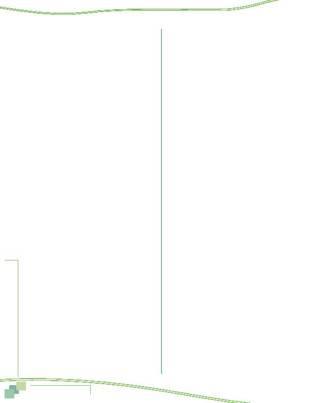

MWCOG-Comm
uter Conn
ecti
on
s-- 2010 State o
f th
e Comm
ute Report
9 0
5 Less wear and tear on roads
6 Reduce accidents, improve travel safety
7 Reduce government costs
8 Less stress, less road rage
9 Other (specify) ___________________
88 No benefits
99 Don't know
CURRENT COMMUTE COMPARED TO LAST YEAR
56m Overall, how satisfied are you with your trip to
work?
Use a scale of 1 to 5, where "1" means not
satisfied at all and "5" means very satisfied.
Not at all Very (Don't
satisfied satisfied Know)
Scale: 1 2 3 4 5 9
57 Would you say your commute is easier, more
difficult, or about the same now as it was one
year ago?
1 easier
(ASK Q58)
2 more difficult
(ASK Q59)
3 about the same
(SKIP TO Q60)
4 not applicable
(SKIP TO Q60)
9 DK/Ref
(SKIP TO Q60)
58 In what way is it easier?
1 shorter distance
2 trip is faster, takes less time
3 route is less congested
4 started carpooling/vanpooling to work
5 started using bus, train to work
6 started driving alone to work
7 less stressful
8 bought a hybrid or compressed natural gas (CNG)
vehicle
9 started using HOV lanes
10 gas prices are lower, gas costs less
11 other ___________________
19 Refused/Don't know
59 In what way is it more difficult?
1 longer distance
2 trip is slower, takes more time
3 more congested
4 started carpooling/vanpooling to work
5 started using bus, train to work
6 started driving alone to work
7 more stressful
8 construction on route to work
9 trains, buses, metro more crowded
10 gas prices are higher, costs more
11 other ___________________
19 DK/Ref.
60 Have you changed your work or home location in
the last year?
IF YES, AND RESPONDENT DOES NOT
VOLUTEER INFORMATION, ASK
, "Did you change
your home or work location?"
1 Yes, changed home location
2 Yes, changed work location
3 Yes, changed both home and work locations
4 No
(SKIP TO Q61)
9 DK/Ref.
(SKIP TO Q61)
60a Was your previous location also in the
Washington metropolitan region?
1 Yes
2 No
9 DK/Refused
60b What factors did you consider in your decision to
make this change?
(DO NOT READ, ACCEPT MULTIPLE
RESPONSES)
Commute Factors
1 Length, ease of commute
2 Cost of commuting
3 Commuting options that would be available (e.g.,
transit)
Residential Factors
4 Quality of schools, stay in same school system
5 Cost of house
6 Cost of living
7 Size of house
8 Quality of neighborhood
9 Closeness to family or friends
10 Entertainment, shopping, services nearby
Job Factors
11 Income, salary
12 Job satisfaction
13 Career advancement
14 Job opportunities for spouse
15 Other (SPECIFY) ___________________
19 DK/Refused
60c How important to your decision was the ease of
your trip to work compared to the other factors
you just mentioned? Was it less important than
other factors, more important, or about the same
importance?
1 Less important
2 More important
3 About the same importance
9 DK/Refused
IF Q60 = 1 OR 3, ASK Q60d and Q60e, OTHERWISE,
SKIP TO Q61
Appendix--Survey Questionnaire